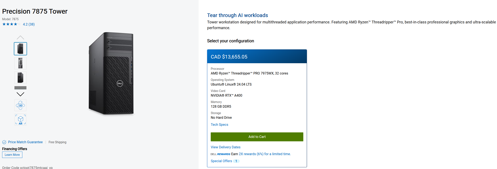
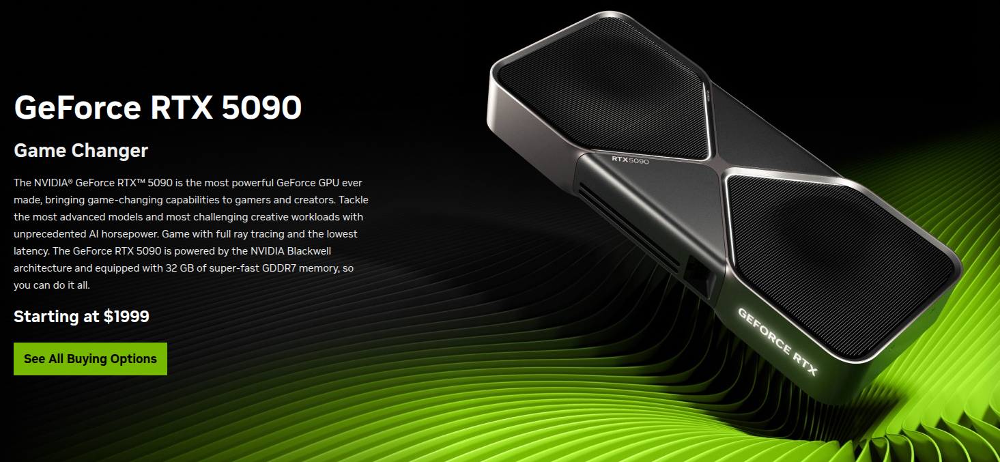

PC Build to run 120B LLMs
DELL Precision T7875 with 2× NVIDIA RTX 5090 GPUs**
Product Links:
The configuration itself is enterprise-grade workstation class and it can handle:
- 20B–70B model inference
- Qwen/Qwen-Coder 30B/32B at high speed
- GPT-OSS 20B finetuning
- Multi-GPU training
- Future 120B inference with tensor/quantization + device_split
Why This Dell Precision T7875 Can Run 2× RTX 5090
Your machine has the correct PCIe layout:
PCIe Slots
- 1× PCIe Gen5 x16 (full bandwidth) → Perfect for primary RTX 5090
- 1× PCIe Gen4 x16 (full bandwidth) → Perfect for secondary RTX 5090
RTX 5090 uses:
- PCIe Gen5 interface
- Requires x16 electrical
- Requires 350–450W power
This chassis is designed for exactly this kind of load.
Power Delivery Support?
The T7875 typically includes:
- Up to a 2000W enterprise PSU
- Server-grade power distribution
- Air shrouds for dual-GPU thermals
Dell explicitly certifies this chassis for dual-wide GPUs such as:
- RTX 6000 Ada
- RTX A6000
- RTX 5000 Ada
- Dual RTX 4090 in some configs
If it handles those, it will handle dual RTX 5090.
CPU Compatibility
AMD Threadripper PRO 7975WX
- 32 cores / 64 threads
- 8-channel DDR5 ECC RDIMM memory
- PCIe 5.0 lanes for multiple GPUs
- Massive bandwidth
This CPU is perfect for multi-GPU model training/inference because it can feed the GPUs without bottlenecking.
💾 Memory Support
128 GB DDR5 ECC RDIMM (8 × 16GB)
This workstation supports up to:
Up to 2 TB ECC RDIMM
Can be upgraded later if needed for training LLMs up to the 70B range.
🧠 What can you realistically run on this setup?
With 1× RTX 5090 (32GB VRAM):
- GPT-OSS 7B–20B fast
- Qwen/Qwen-Coder 14B fast
- Qwen-Coder 30B (quantized) good
- GPT-OSS 20B fine-tuning (QLoRA) OK
With 2× RTX 5090 (64GB combined VRAM):
Inference
- GPT-OSS 30B → very fast
- Qwen/Qwen-Coder 32B → smooth
- DeepSeek 67B Q4/Q5 → possible but slower
-
GPT-OSS 120B → EXPERIMENTAL but doable
-
Requires tensor parallelism
- Needs both GPUs
- Quantized mode
- And you may see 1–3 tok/s
So yes — future-proof enough for 120B inference.
Fine-Tuning
You can reliably tune:
- GPT-OSS 20B (QLoRA or full-finetune with memory optimisation)
- GPT-OSS 30B (QLoRA only)
- Qwen 32B (QLoRA)
- DeepSeek 33B (QLoRA)
❗Important: Does Dell ship RTX 5090 options?
Right now:
- Dell does not list RTX 5090 because it’s a consumer card
- But the slot and power design support it
- You simply buy the GPUs yourself and install them manually
Dell T7xxx and T5xxx series are known for being compatible with:
- RTX 4090
- RTX 5090 (same size/power profiles—just new generation)

